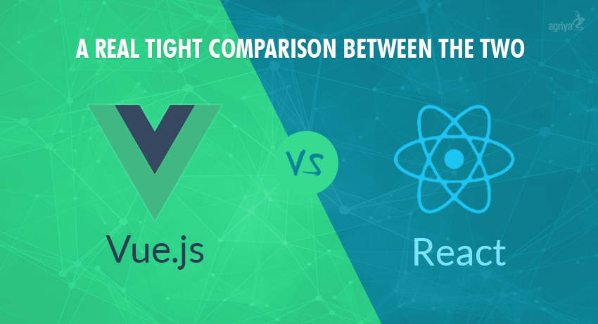

프론트엔드 개발에 쓰이는 자바스크립트 언어를 프레임워크화해서 개발 차원에서의 효율성과 사용자 환경(UI)의 편의성을 높이고자 하는 목적으로 개발되었다.
Gof의 디자인 패턴으로 유명한 랄프 존슨(Ralph Johnson)은 "프레임워크란, 소프트웨어의 구체적인 부분에 해당하는 설계와 구현을 재사용이 가능하게끔 일련의 협업화된 형태로 클래스들을 제공하는 것"이라고 정의하였다.
프레임워크는 부분적 사용이 불가능하고 프레임 워크의 안으로 들어가서 프레임 워크가 지원해주는 문법에 따라서 작성해줘야 제대로 동작한다.
1. 효율적이며 아무것도 그려지지 않은 제로에서 코드를 일일이 짜는 것보다 시간과 비용이 훨씬 절약되며 생산성이 좋아진다.
2. Quality가 향상되며 버그 발생 가능성을 처리해줌으로써 개발자가 반복 작업에서 실수하기 쉬운 부분을 커버해준다. 또한 다수의 개발자가 사용하며 수정하다 보니 이미 검증된 코드라고 볼 수 있다.
3. 프레임워크를 쓰지 않고 일일이 코드를 짜 놓은 경우, 회사 입장에서 개발 담당자가 바뀌어버리면 곤란해진다. 그러나 Framework를 사용하면 코드가 보다 체계적이어서 담당자가 바뀌더라도 위험부담을 줄일 수 있으며 유지 보수에 안정적이다.
1. 학습시간이 길다. 코드를 본인이 짜 놓은 것이 아니기 때문에, 프레임워크에 있는 코드를 습득하고 이해하는 데 오랜 시간이 걸리게된다.
2. 제작자의 의도된 제약 사항
- 제작자가 설계한 구조를 어느 정도 유지한 채 코드에 살을 붙여나가야 한다. 따라서 개발자는 자유롭고 유연하게 개발하는 데 한계가 있다.

사용자가 필요할 때에 가져다 썼다가 뺐다가 할 수 있고 부분적으로 사용이 가능하다.
- 자동차로 예를 들면, 자동차를 굴러갈 수 있게 하는 바퀴, 어두운 밤을 환하게 비출 수 있는 헤드라이트, 비 올 때 창문을 닦아주는 와이퍼 등이 라이브러리라고 할 수 있다.
부분적 사용이 불가능하고 프레임 워크의 안으로 들어가서 프레임 워크가 지원해주는 문법에 따라서 작성해줘야 제대로 동작한다.
- 자동차로 예르들면 자동차의 프레임 뼈대에 해당되며, 한 번 정해진 자동차의 프레임은 바꾸질 못한다.
- 소형차를 만들기 위해 뼈대를 사용하는데, 이 뼈대로 SUV를 만들 수는 없는것이다.
이런 태생적 특성 때문에 리액트는 리액트만의 대체 불가능한 문법이 지정되어있기 보다는
자바스크립트 문법을 응용해서 개발자가 자유롭게 개발할 수 있는 환경이고, 뷰는 뷰에서 지정해준 문법 방식으로만 개발 할 수 있다.